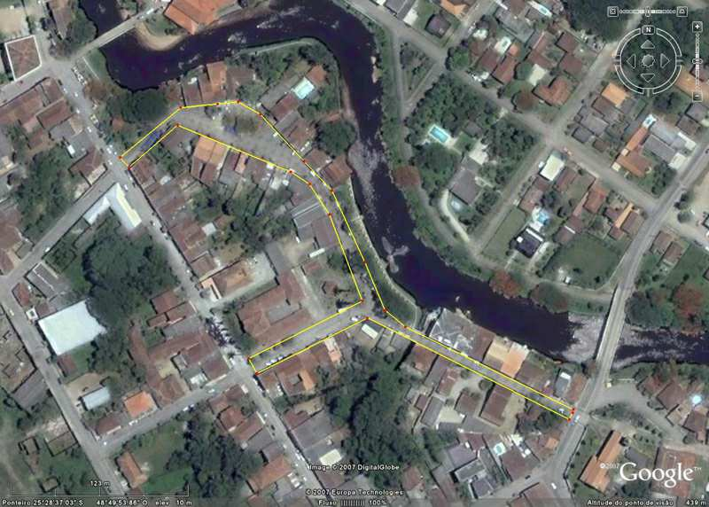
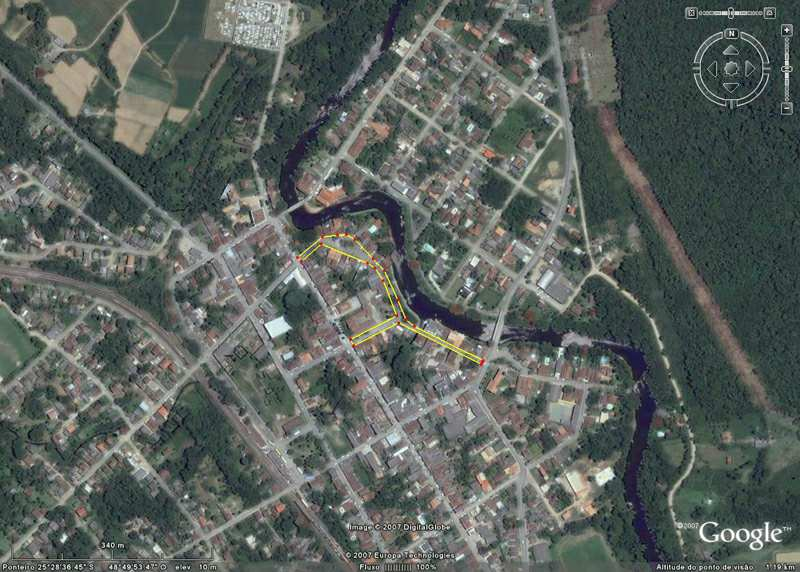

MORRETES E O SEU PRINCIPAL PONTO
TURÍSTICO
01 de Outubro de 2007
Morretes já é considerada há
muito tempo uma cidade turística.
Muitos vivem a custa deste turismo e também há muito tempo.
Mas convenhamos, qual é o principal
ponto da cidade onde há maior concentração de turistas,
e isto mesmo antes de existirem restaurantes?
Ora, sem dúvida nenhuma e sem medo de
errar, é exatamente a área
carinhosamente conhecida como “A Beira do Rio”, que no caso é
à beira do Rio Nhundiaquara.
Ela começa na Ponte de ferro, ou ponte velha, e vai até a ponte
de concreto
que fica atrás do Hotel Nhundiaquara. Veja a FOTO 01.
E o lado do rio mais movimentado é exatamente o lado direito do rio,
em sentido do mar.

FOTO 01 -"A Beira do Rio" - área circundada em amarelo.
Será
que alguém poderia ter alguma idéia de quantas fotos já
foram tiradas desta área?
Seria possível mensurar isto? Duvido!
Será que alguém poderia mensurar quantas telas foram pintadas
desta área? Também duvido!
Veja
nestas fotos o que o visitante merece ver. FOTOS 02 e 03

FOTO 02

FOTO 03
Bem,
mas você já se tocou de como ficou o "passeio"
depois do evento dos “Restaurantes” (sic) permitidos nesta área?
Eu acho que não! Porque muitos são cegos de propósito.
Bem, mas eu também acho que sim... Só que aqueles que se tocaram,
falaram, reclamaram, odiaram
e continuam reclamando, o som destas vozes parece não alcançar
os ouvidos surdos daqueles
que são responsáveis por esta área e daqueles que a estão
“explorando”,
e que neste caso, considero imerecida.
Eu
estou falando, e se você ainda não percebeu, sobre o fato de que
aquela área turisticamente conhecida no mundo inteiro que,
principalmente nos finais de semana, se tornou um ESTACIONAMENTO DE CARROS,
quando deveria ser um
PERMANENTE ESTACIONAMENTO DE PEDESTRES, TURÍSTAS, MORADORES,
VISITANTES E AFICCIONADOS DA ETERNA BELEZA NATURAL DO LOCAL.
Mas
o que se vê ali? Carros e mais carros pra todo o lado.
Entupindo as vias onde as pessoas deveriam estar aproveitando o local.
Pessoas sendo empurradas pelos carros (ou motoristas mal educados).
Você
já experimentou tirar uma foto desta área nos finais de semana?
Eu não tiro mais, porque depois o que a gente vai ver é só
carro escondendo a arquitetura antiga.
Eu
nem coloquei aqui fotos com carros porque é só ir ver lá
e comparar.
Ah!
E por falar nisso, e o pessoal do Patrimônio Histórico, onde anda?
Ou eles se modernizaram tanto que agora estão cuidando da preservação
dos carros
e só se preocupam com o bem estar financeiro dos “Restaurantes”
(sic)?
Você
já deu uma volta pelas outras áreas da cidade? FOTO 04.
Tem lugar para estacionar de sobra! Mas porque isso não ocorre?
Talvez tenha que se providenciar segurança municipal para isso.
E qual é o problema? Os Restaurantes não pagam impostos?

FOTO
04 - Vista aérea da cidade.
(A área da ‘Beira do Rio” inserida na área da cidade.)
Agora,
o que mais impressiona é o fato de que os donos dos restaurantes ainda
não perceberam que,
se não houver carros estacionados na ‘Beira do Rio’, ela
será mais plena de pessoas,
e pessoas precisam comer, precisam utilizar os serviços deles, dos Restaurantes.
Na realidade eles deveriam contribuir para que a área seja mais turística
ainda,
com projetos que, nos lugares dos carros, sejam efetivados fatos relacionados
à nossa história morretense,
como já se pode ver nas feiras.
Que seja algo de bom gosto, que fique inserido na paisagem,
e que realmente digam algo engrandecedor da nossa história.
Já fizeram algo parecido quando homenagearam os poetas Lúcio Borges
e Arlindo de Castro.
E a nossa história tem muito mais do que isso.
Morretes
está gritando, e alto, porque quando os seus naturais falam é
a própria cidade que fala.
Quando os seus naturais se sentem incomodados é própria cidade
que está incomodada.
Por outro lado, quando os seus naturais se calam, é a própria
cidade que está doente.
Então é necessário remédio, e remédio quase
sempre é amargo.
Mas por causa do amargo do remédio é que nos curamos, é
que a saúde volta
e a beleza natural se estampa nas faces sadias.
Assim espero que, caso o remédio seja amargo, a face da cidade volte
a ser bela e sadia.
RESTAURANTES |
Ao
ler o que abaixo escrevo, talvez você diga: "Ah! Mas isso
já é implicância demais!"
Mas, primeiro leia tudo e considere e depois você poderá
falar o que quiser.
|
Eu, e umas vinte pessoas,
mais ou menos, fomos gentilmente convidados a participar de um encontro
de confraternização por causa do término dos trabalhos
efetuados referentes aos eventos alusivos a comemoração
do Sesquicentenário de nascimento de Rocha Pombo.
O encontro foi na Sexta-Feira, dia 23 de novembro de 2007, às
20:00 hrs.
Foi escolhido um restaurante em Morretes, é claro!
No auge da festa fomos surpreendidos pela marcante grosseria do proprietário
do restaurante.
Num arroubo de raiva incontida, digno de pena, passou a vociferar para
todos os presentes no restaurante, além de nós, ouvirem
que, "da forma como estávamos pedindo os pratos não
era possível continuar a atender-nos".
O silêncio foi geral e constrangedor e o horror ficou estampado
na face de todos.
Os pratos que havíamos pedido e já estávamos sendo
servidos? Pizza! É isso mesmo: P . I . Z . Z . A !
Escolhemos um restaurante que nos servisse Pizza e optamos pela forma
mais democrática: um rodízio de Pizza.
Que dó e que dor lancinante cortou o coração de
todos naquele momento!
Realmente, os donos dos restaurantes parecem que ficaram embriagados
pelo resultado financeiro que a beleza turística da cidade proporciona
aos visitantes.
Tal embriagues turvou completamente seus olhos e raciocínio a
tal ponto que, não só estão desconsiderando a história
da cidade e seu patrimônio, como também aqueles que lhes
pagam as contas e os seus sustentos.
Já não basta as reclamações sobre suas comidas,
sobre seu desconhecimento de como se faz e se serve o Barreado, e sobre
os cabelos que tem vindo misturados nos alimentos e sobre transformar
no principal ponto turístico da cidade em uma exposição
permanente de veículos, ofuscando a arquitetura antiga?
E então agora temos que agüentar também a grosseria
e a má-educação de certos proprietários?
Existe uma máxima entre os clientes dos restaurantes no mundo
inteiro de que "quando se conhece a cozinha de um restaurante jamais
se retorna a se alimentar nele"!
Nesta minha querida Morretes não precisa se conhecer a cozinha
dos restaurantes.
Os clientes já estão recebendo nas mesas estas máximas,
seja através dos alimentos ou pela conduta dos seus donos.
Morretes sempre foi procurada pela sua beleza natural e pela sua história.
Sempre foi isto que manteve a cidade viva. Lembra quando terminaram
de construir a BR-277?
E os restaurantes? Bem, já tiveram vários e famosos.
Você conheceu o Restaurante do Lorusso? O Restaurante do Jacaski?
O Restaurante do Zanicoski? O Restaurante do Zé? O Bar do Orreda?
Todos excelentes, sem exceção. Eu vivi nestes restaurantes.
Eu comi a comida destes restaurantes. Eu conheci a cozinha de todos
eles.
E onde estão agora?
Foram esquecidos na poeira do tempo!
E a cidade não parou porque eles viraram poeira, assim como a
cidade não vai parar quando os atuais também virarem pó.
Naquele triste momento de raiva incontida do referido proprietário,
mal sabia ele que estava escrevendo o seu presente e o seu futuro.
Quanto a nós, os que ali estavam presentes, olhamos com tristeza
mais uma folha da vida virando passado.
Volto a insistir:
Morretes está gritando, e alto, porque quando os seus
naturais falam é a própria cidade que fala.
Quando os seus naturais se sentem incomodados é a própria
cidade que está incomodada.
Por outro lado, quando os seus naturais se calam, é a própria
cidade que está doente.
Então é necessário remédio, e remédio
quase sempre é amargo.
Mas por causa do amargo do remédio é que nos curamos,
é que a saúde volta
e a beleza natural se estampa nas faces sadias.
Assim espero que, caso o remédio seja amargo, a face da cidade
volte a ser bela e sadia.
|